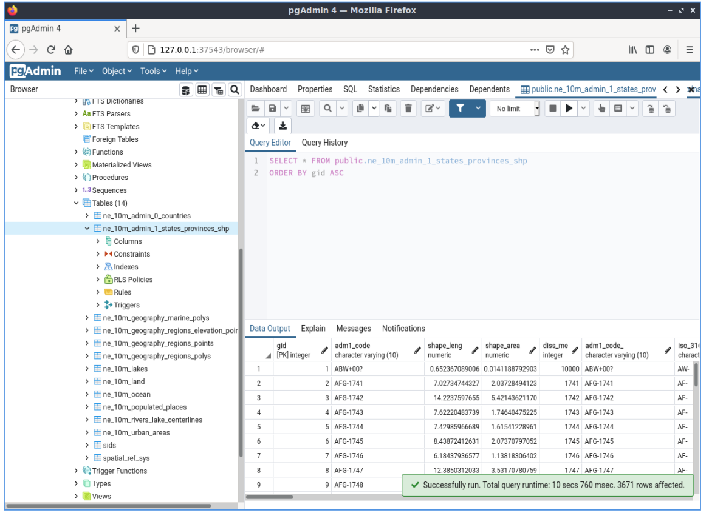

PostGIS¶
Spatial Database¶
PostGIS spatially enables the popular PostgreSQL object-relational database, allowing it to be used as a back-end database for geographic information systems (GIS) and web-mapping applications.
PostGIS is stable, fast, standards compliant, with hundreds of spatial functions and is currently the most widely used Open Source spatial database. PostGIS is used by diverse organisations from around the world, including risk-averse government agencies and organisations storing terabytes of data serving millions of web requests per day.
Database administration is available for desktop and the web via pgAdmin, phpPgAdmin, and others. Data import/export can be done by command line tools (shp2pgsql, pgsql2shp, ogr2ogr, dxf2postgis) or from desktop and web GIS clients. These clients can also map and manipulate PostGIS spatial data tables.
{kind=link}
Core Features¶
- Hundreds of spatial functions
- Buffers, unions, overlays, distance and more
- ACID transactional integrity
- R-Tree spatial index
- Multi-user support
- Row-level locking
- Replication
- Partitioning
- Role-based security
- Table-spaces, schemas
Implemented Standards¶
- OGC standards compliant (SFSQL)
Details¶
Website: http://postgis.net
Licence: GNU General Public License (GPL) version 2
Software Version: 2.5.2
Supported Platforms: Windows, Linux, Mac
API Interfaces: SQL
Support: OSGeo service providers